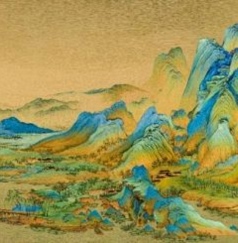
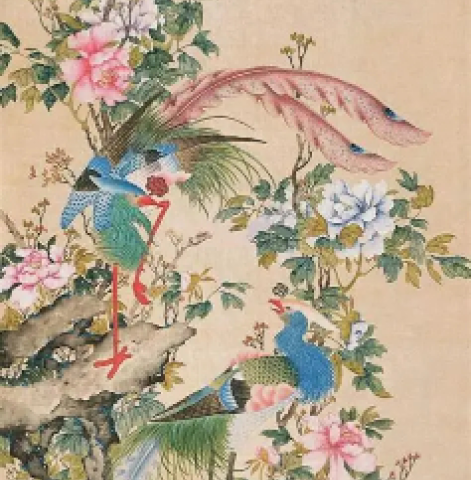
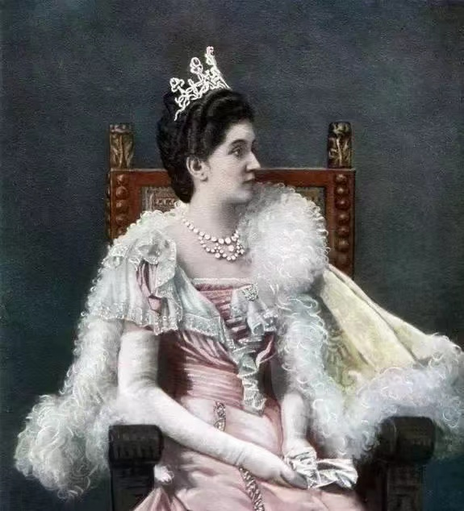
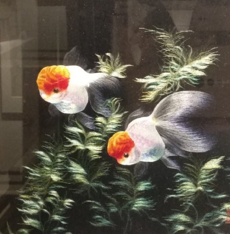
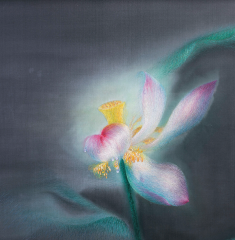
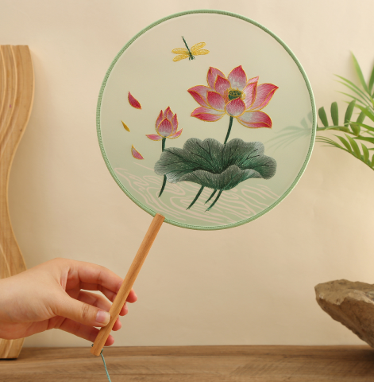
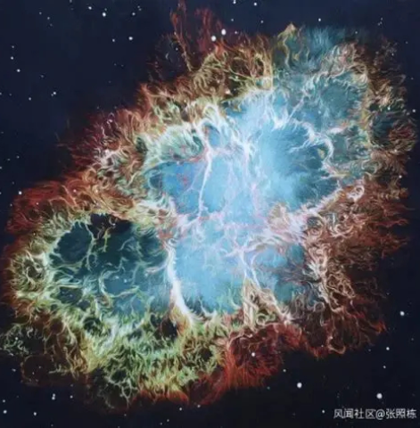
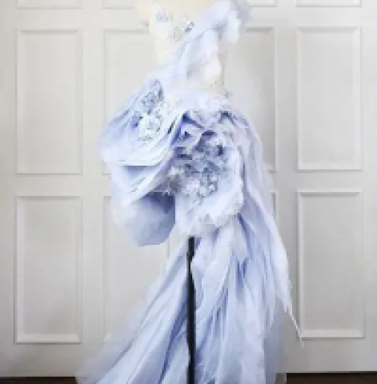

Mille miglia di fiumi e montagne
pieno e vuoto
Con il filo di seta al posto dell’inchiostro e del pennello, il paesaggio acquista profondità e ritmo visivo.

Utilizza decine di tecniche di stratificazione del punto, con colori ricchi e leggere transizioni luminose.

Con il filo di seta al posto dell’inchiostro e del pennello, il paesaggio acquista profondità e ritmo visivo.

Il ritratto di Elena d’Italia di Shen Shou è un’opera ispirata alla resa luministica del ritratto occidentale.

Il disegno è identico su entrambi i lati, ma i colori sono differenti, mostrando una delle vette tecniche del Suzhou.

Un’opera monumentale realizzata in diversi anni, che unisce la luce setosa a una composizione sospesa.

Su una base semi-trasparente viene applicato il ricamo Suzhou con delicate sfumature di verde e rosa.

Supera i limiti del ricamo tradizionale su superficie piana e porta il filo in una dimensione cosmica e contemporanea.

Unisce il ricamo piatto e il ricamo con filo d’oro, adattandosi con naturalezza alla struttura sartoriale.